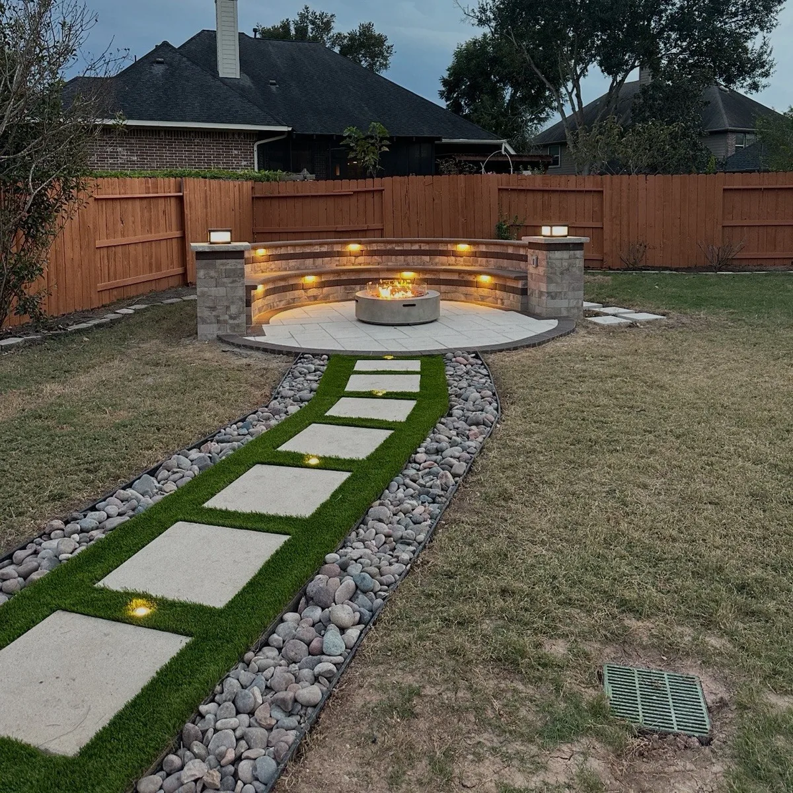
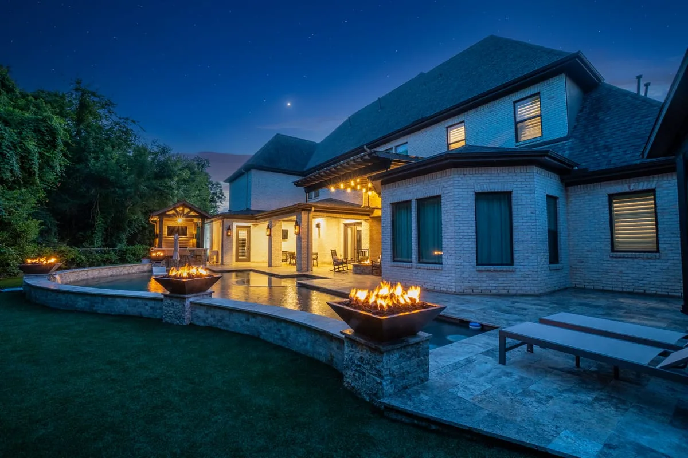
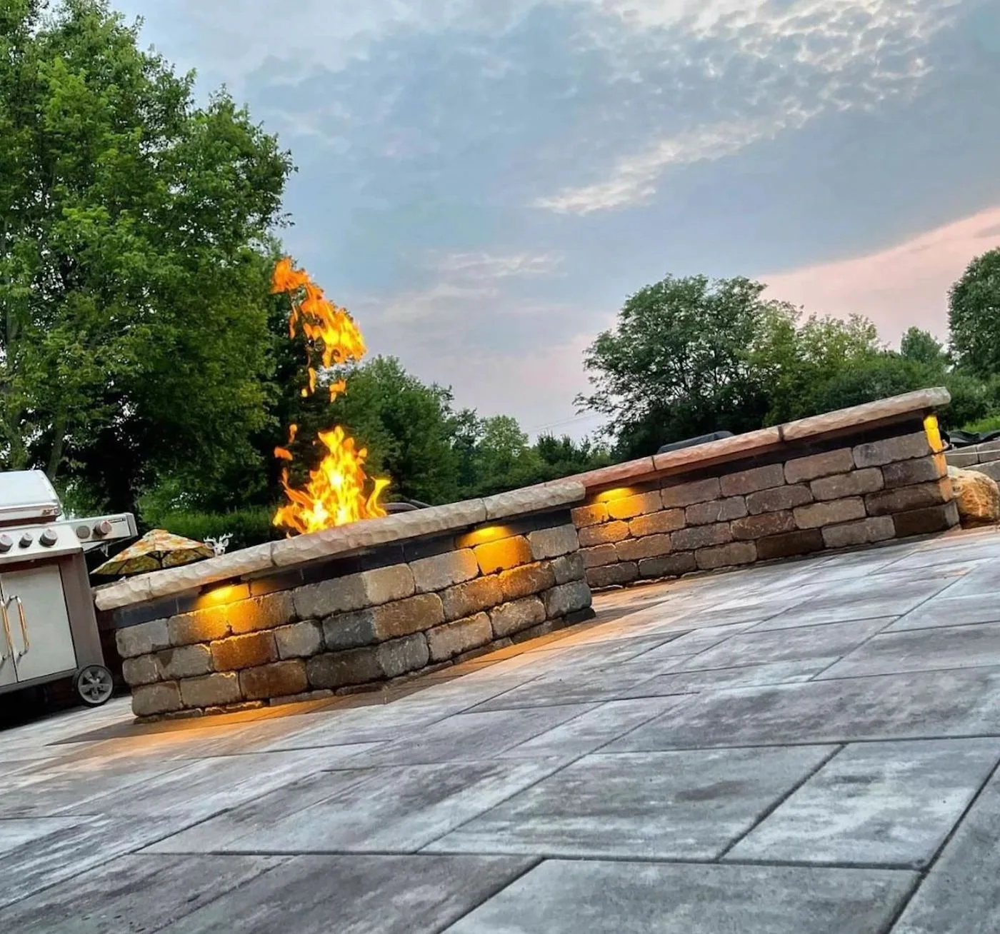
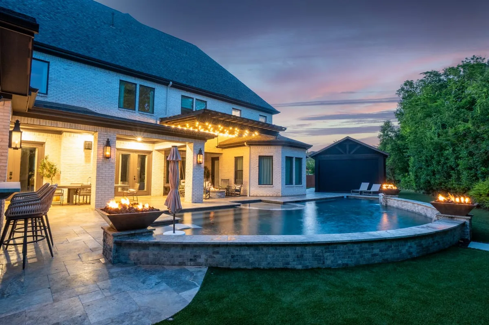
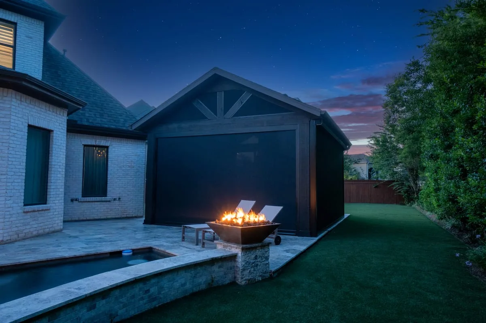

Bring Warmth, Comfort, and Ambiance to Your Backyard
Custom Fire Features in Houston, TX
- Gas & Wood-Burning Options
- Safety-Inspected Lines
- Free Site Consultation
Greater Houston's Trusted Fire Features Contractor
Transform your outdoor living space into a warm, inviting retreat with a custom fire feature from Longhorn Hardscape & Construction. We design and build custom fire pits, outdoor fireplaces, fire bowls, fire tables, and fire features for homeowners throughout Greater Houston, Missouri City, Sugar Land, Katy, and Pearland. Whether you envision a cozy fire pit surrounded by natural stone seating or a stunning fire bowl accenting your pool, every feature is thoughtfully designed to complement your outdoor space and built with safety, durability, and exceptional craftsmanship in mind.
From your complimentary on-site consultation through final installation, our team works closely with you to create a fire feature that enhances your home's beauty, extends the enjoyment of your outdoor living space, and becomes a gathering place for family and friends for years to come.

Fire Features Options We Build in Houston
In-Ground Fire Pits
Custom-built round or square fire pits set into your patio surface — gas or wood burning, surrounded by your choice of stone or paver materials.
Fire Bowls
Elevated fire bowls on pedestals or integrated into seating walls — dramatic focal points that add height and visual impact.
Outdoor Fireplaces
Full masonry or prefab outdoor fireplaces — the ultimate centerpiece for a covered patio or outdoor living room.
Linear Fire Tables
Modern rectangular gas fire tables with glass rock or lava stone media — perfect for contemporary outdoor dining areas.
Fire Pit Seating Walls
Custom stone or paver seating walls built around your fire pit — comfortable, integrated, and designed to last.
Gas vs Wood Options
We install both natural gas and propane fire features, or traditional wood-burning designs depending on your preference and property setup.


Why Choose Longhorn for Your Houston Fire Features
Gas Lines Done Right
We run natural gas or propane lines underground with pressure-tested fittings, proper shutoffs, and installation reviewed for Houston fire code — not just surface-level hookups.
Stone That Integrates, Not Just Sits
Fire pit surrounds, seating walls, and bowl pedestals are designed to flow from your existing patio — matching stone type, mortar color, and cap profile.
Wood-Burning or Gas — We Walk You Through It
Both options have real trade-offs in BTU output, maintenance, and installation cost. We'll give you an honest comparison so you pick what fits how you actually use your yard.
Sized for Houston Nights
We engineer BTU output for this climate — enough warmth to be comfortable on a 50°F January evening without creating a blast furnace in March.
Fire Features Areas We Serve
We serve Greater Houston and surrounding Fort Bend County communities.
Fire Features FAQs — Houston
Gas fire pits require either a natural gas connection or a propane tank setup. Wood-burning fire pits need no utility connections. We'll advise you on the best option for your yard during your free consultation.
Most Houston-area municipalities allow fire pits with reasonable setback requirements from structures and property lines. HOA rules vary. We advise you on local regulations during your consultation.
We build fire pit surrounds using natural stone, concrete pavers, brick, and cultured stone — all rated for high heat exposure. Fire bowls are typically cast concrete, copper, or steel.
Yes, most existing patios can accommodate a fire feature with minimal modification. We assess your existing surface and design a fire pit that integrates seamlessly with what's already there.
Fire Feature Projects in Houston, TX
Custom fire pits, fire bowls, and fireplaces built across Greater Houston.






Ready for a Free Fire Features Estimate?
Tell us where you envision gathering — we'll design a fire feature that makes that corner of your yard the best seat in the house.